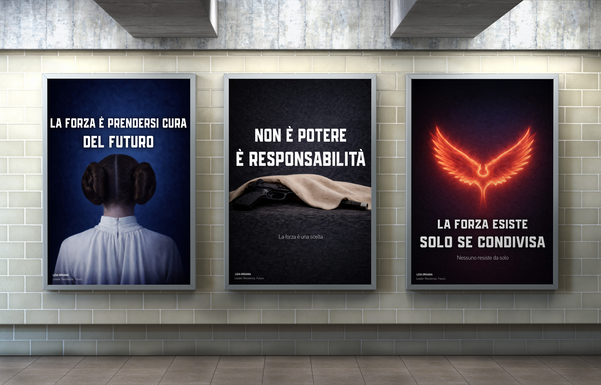
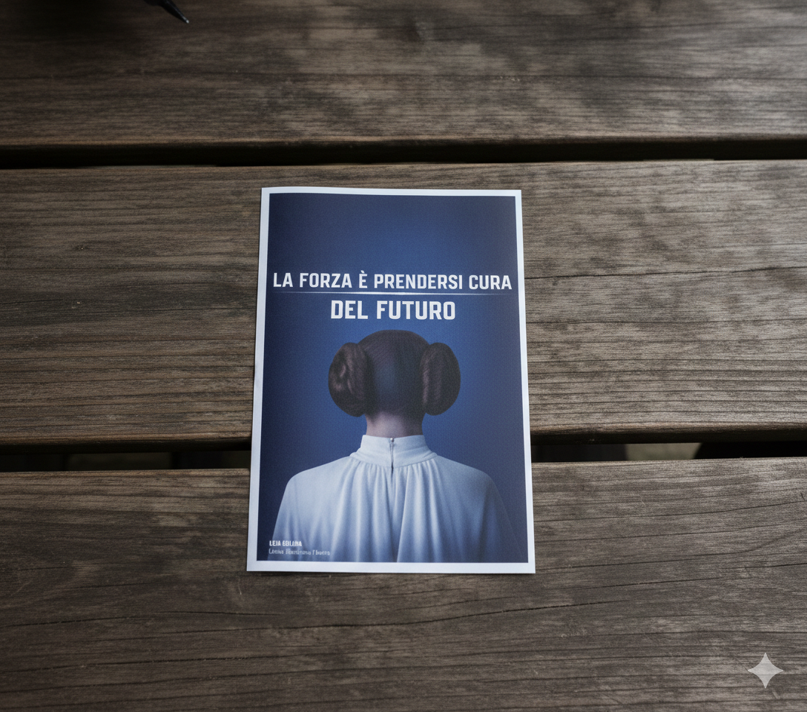
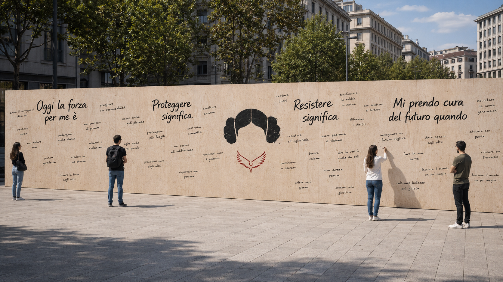
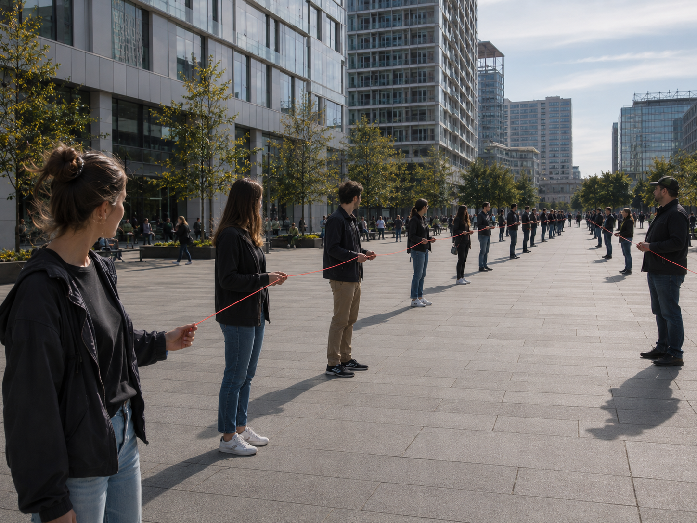

Nell’immaginario contemporaneo, la forza viene spesso associata al dominio, alla guerra e al controllo. Il progetto propone invece una visione alternativa attraverso Leia Organa, che incarna una forza etica e relazionale.
La campagna trasforma Leia Organa da icona narrativa a simbolo di una forza etica e collettiva, fondata su responsabilità, cura e capacità di costruire il futuro. Una visione alternativa all’eroismo individuale e alla violenza come soluzione, raccontata attraverso un tono lucido, politico e inclusivo: calmo, ma fermo e determinato.
Il sistema visivo adotta un linguaggio essenziale e simbolico, basato su equilibrio, spazio negativo e sottrazione, evitando riferimenti diretti al franchise e ogni estetica nostalgica o spettacolare.
Oggi la forza è associata a potere, scontro, violenza e produce frustrazione e impotenza.
Entra Leia, non come personaggio ma come linguaggio culturale: possiede potere, ma non lo usa come dominio.
La forza diventa cura, scelta, collettività. Non lo si spiega: lo si fa vedere, dal verbale al visivo.
Il protagonista non è più Leia, ma il pubblico. La campagna non chiude il senso: invita a riconoscersi.
Volantini diffusi in città, università, eventi e mostre a tema.

Un muro partecipativo nello spazio pubblico raccoglie azioni e pensieri delle persone, trasformandosi nel tempo in un archivio collettivo della forza come responsabilità condivisa.

Un filo rosso attraversa lo spazio pubblico coinvolgendo progressivamente le persone, creando una linea condivisa che rende visibili connessione, responsabilità e continuità collettiva.

I social diventano uno spazio di connessione e confronto, dove il pubblico riflette sul significato di forza, responsabilità e speranza attraverso la condivisione di piccoli gesti quotidiani.